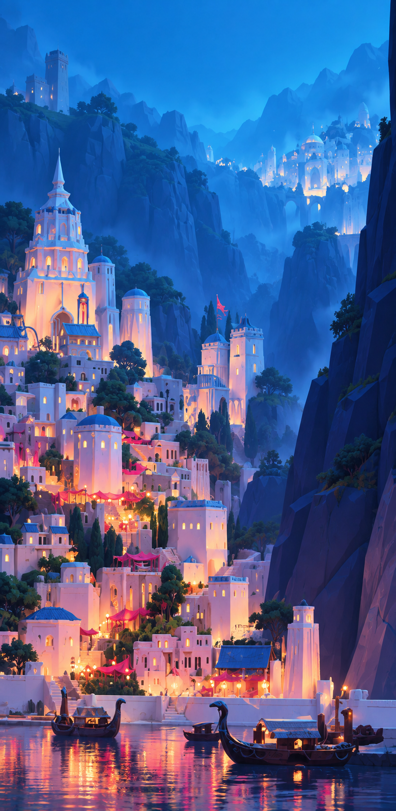

圣城 · 第一轮蓝夜候选
左侧原工厂日景，右侧蓝夜候选。两张均为同一相机的实际 Godot 渲染；这是独立检视工程，尚未替换游戏。
这一轮已做原布局978格不变，WFC露台类选择122→170；2436条有向邻接兼容检查通过。Blender调整原远山网格，地基与低水岸区域不变。Godot布置青蓝环境、深靛山体和金/桃红窗灯。
仍有明显差距山体面片较粗，城镇的纵深与目标图仍有距离；植物贴地、角模块几何接缝、入口通行和原水面的动态倒影尚待完成。当前绘制开销偏高，不能标记性能验收通过。
独立 Godot 工程 · Blender 地形副本 · 本轮记录与下一轮 · WFC 检查 · 渲染记录
当前目标图

目标图用于迭代判断，不是已实现的游戏画面。